Маршруты
Адырсу: в. ВИА-тау (2А и 2Б)
Виатау по Южному гребню 2Б,
Виатау по Северному гребню 2А
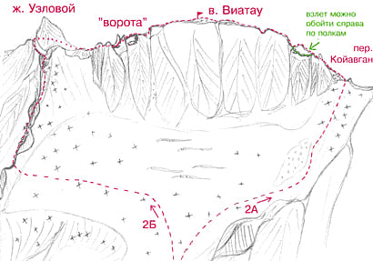
Описание маршрута 2Б
От альплагеря "Уллутау" перейти по мосту р. Адырсу и мимо коша двигаться в сторону "острова". Перейдя систему ручьев (напротив Старого Джайлыка), свернуть налево на крутую тропу уходящую мимо водопада вверх. По тропе доходите до ночевок, расположенных перед левобережной мореной ледника. От лагеря 1,5-2 часа.
1. От ночевок доходите по тропе до конца морены и, траверсировав фирновые склоны Койавгана, выходите на ледник. Прямо перед вами массив Виатау без явно выраженной вершины.
Слева от вершины вы увидите явно выраженный жандарм Узловой, через который проходит маршрут 2б.
2. Сворачиваете налево и движетесь по леднику в сторону самого низкого провала в гребне, идущем от Узлового жандарма. Поднявшись в провал, поворачиваете направо в сторону жандарма. Движетесь по простым тропам слева от гребня, затем переходите направо на снежник. По нему выходите на скалы и по простым полкам подходите к основанию жандарма. Жандарм обходится слева и сзади.
3. Обойдя жандарм, выходите направо на Южный гребень вершины Виатау. Движетесь вначале по гребню, затем слева от него по простым полкам, пока не увидите справа наверху большие скальные ворота. Подымаетесь по скалам средней сложности на гребень перед "воротами". Проходите внутри "ворот" и сразу за ними ключевое место маршрута - острый 2-3метровый скальный гребешок, который легко пройти, сев на него верхом. Есть искушение обойти гребешок справа по полкам, но выход там более стремный.
4. Далее движетесь по гребню до предвершинного взлета. По крутым скалам средней трудности предвершинного взлета 50м выходите на простую широкую часть гребня ведущую к вершине Виатау.От ночевок 5-6 часов. Спуск по 2а.
Описание маршрута 2А
1. На леднике сворачиваете направо и движетесь в сторону перевала Койавган. По крутому снежно-фирновому (в августе осыпному) взлету подымаетесь на перевал слева от снежного карниза на перевале.
2. На перевале сворачиваете налево и вначале по немного разрушенным, а затем по монолитным скалам гребня подымаетесь на в. Виатау. От ночевок 4-5 часов
Адырсу: Джайлык 4А
Джайлык по Северному склону Западного гребня, 4А, комб.

Описание маршрута
R0. От "Черных скал" гребня вершины Джайлык подъем по пологому, затем по крутому ледово-снежному 400-500 метровому склону северной (левой по ходу) стороны Западного гребня вершины Джайлык.
R1. Вначале подъем по правой части ледового склона до двух скальных островов посередине склона. Затем траверс влево между скальными островами и подъем прямо вверх до перемычки Западного гребня слева от жандарма "Клешня".
R2. На перемычке повернуть налево и двигаться сначала по полкам с правой стороны скального гебня, затем подъем на гребень и выход на вершину Джайлык.
Адырсу: Койавган по Северо-западному леднику 3Б
Койавган по Северо-Зап. леднику, 3Б к.тр., маршрут Рудольфа Ефимова
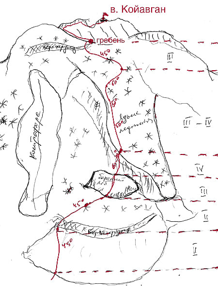Описание маршрута
Ночевка под мореной, ведущей на Джаловчатские ночевки. Нижнюю часть ледника до бараньего лба необходимо пройти до 9-00, т.к. после 9 утра сыпят камни.
1. До бараньего лба 3 веревки (по 50м). Крутизна 45гр. (при прохождении бергшрунда - страховка)
2. бараний лоб 1 веревка под язык ледника (страховка - закладки, крючья).
3. Выход на язык ледника, 1 веревка, крутизна 60-70 град. (страховка - ледобуры).
4. Вверх по леднику, 8 веревок, крутизна 50-60 град. (страховка - ледобуры).
5. Далее 7 веревок по снегу до выхода на гребень, крутизна снежника 45-50 град. (страховка через ледоруб).
6. Перед выходом на гребень бергшрунд, который переходится по мосту. Тщательная страховка при преодолении бергшрунда!!!
7. По гребню до вершины движение одновременное. Страховка через выступы. гребень сильно разрушен, живые камни. По гребню до вершины 1 час.
8. Спуск с вершины на перевал Койавган по полкам (1 час). Склон сыпучий, живые камни.
Необходимое снаряжение для двойки:
ледобуры - 5 шт.
кручья ск. - 3-5 шт.
карабины, оттяжки
кошки
ледовый инструмент
палатка
газоаая горелка
Маршрут можно пройти из лагеря в лагерь, но лучше с бивуака.
Адырсу: Лацга по Восточному гребню, 3А
Лацга по Восточному гребню, 3А, комб.
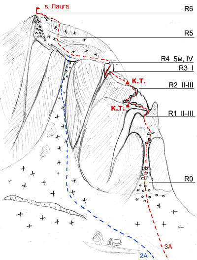Описание маршрута
R0. От площадок перевала Гарваш подойти под Восточный гребень вершины Лацга. По пологой 80-90-метровой осыпи подойти к первому скальному взлету Восточного гребня.
R1. По простым, местами средней трудности (страховка) скалам 1 взлета Восточного гребня 200-250 м вверх под жандарм Палец.
R2. Палец обходить слева и за ним по монолитным 60-80-метровым скалам средней трудности Восточного гребня подойти под 2 взлет Восточного гребня с вертикальной расщелиной. 2 взлет обходить сначала траверсом 20 м по полке слева, затем 18-20 м вверх- вправо на взлет.
R3-R4. Отсюда по осыпному (местами заснеженному) пологому 150-метровому Восточному гребню подойти к небольшому провалу в гребне. Здесь ключевое место маршрута — 5-ти метровая стенка с косой расщелиной (крючьевая страховка).
R5-R6. Далее мимо явно выраженного спускового куллуара слева (2А) вверх по широкому снежному плато с небольшими взлетами подходите к крутому, в зависимости от сезона, ледовому или фирновому 70-80-ти метровому влету. Подымаетесь по нему (страховка) на узкий снежный гребешок, сворачиваете направо и по гребешку выходите на вершину Лацга. В тумане, пройдя спусковой куллуар, продолжайте двигаться вдоль скал и крупной осыпи (слева) до самого крутого взлета.
Спуск в июне-июле по 2А. В августе, при большом таянии, куллуар сильно пробивается камнями, поэтому безопаснее спускаться по пути подъема.
Адырсу: Лацга с Юга по куллуару Восточного гребня, 2А
Лацга с Юга по куллуару Восточного гребня, 2А, комб.
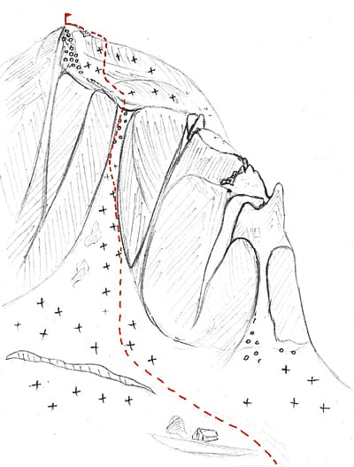Описание маршрута
С площадок перевала Гарваш спуститься на юг на снежное плато. По плато подойти к первому от перевала Гарваш крутому ледово-снежному кулуару. По крутому ледово-снежному, затем простому разрушенному скальному широкому южному кулуару 250-300 м вверх на Восточный гребень вершины Лацга. На гребне свернуть влево и двигаться вверх по широкому снежному плато с небольшими взлетами к крутому, в зависимости от сезона, ледовому или фирновому 70-80-ти метровому влету. Подымаетесь по нему (страховка) на узкий снежный гребешок, сворачиваете направо и по гребешку выходите на вершину Лацга. От перевала Гарваш 5-6 часов. Если вы подымаетесь в тумане, то поднявшись до конца куллуара, поверните налево и двигайтесь справа от скал и крупной осыпи (вдоль них) до самого крутого взлета.
Адырсу: Тютю 2я Западная по Южному ребру. комб. 3Б. (Хрусталик)
Тютю Вторая Западная по Южному ребру, комб, 3Б. ("Хрусталик")
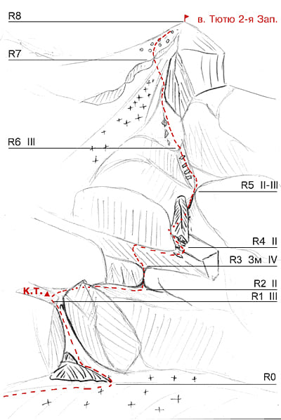Описание маршрута
R0. От Райских ночевок (группа 4-8 человек) по правой стороне ледника Западный Тютю подойти под правую по ходу сторону Южного ребра вершины Тютю Вторая Западная, расположенного между двумя крутыми ледово-снежными камнепадоопасными кулуарами.
R1. С ледника от правой стороны скального взлета Южного ребра по косой наклонной заснеженной осыпной полке-склону выйти траверсом влево в крутой скальный кулуар в центре Южного ребра. По крутым простым скалам кулуара (живые камни, страховка), затем по скалам средней трудности 8-10-метровой стенки (страховка) подняться на осыпной склон кулуара. Слева от куллуара на полке контрольный тур.
R2. От куллуара траверс вправо по осыпной полке вдоль невысокой стенки до внутреннего угла в ней.
R3-R4. По внутреннему углу (ключевое место) вылезти на широкую пологую полку и подойти по ней прямо до стены, где можно организовать хорошую станцию. Далее вдоль стены траверс вправо и по простым скалам выйти на большую выступающую площадку.
R5. По площадке подойти к жандарму Хрустальный и обойдя жандарм слева, выйти на перемычку Южного ребра. От перемычки вверх сначала по узкому, потом по широкому, сильно разрушенному крутому скальному (крючьевая страховка), постепенно выполаживающемуся Южному ребру выйти под большой скальный взлет.
R6. Из-под взлета траверсом 80-100 м по крутым плитам и полкам правой стороны Южного ребра (страховка) подойти к горловине кулуара. Под горловиной пересечь кулуар вправо (камнепады) и по простым скалам правой стороны горловины кулуара подняться на осыпной (возможно заснеженный) склон.
R7-R8. По пологому склону с островками скал подойти под скальный взлет вершины Тютю Вторая Западная. Пройдя слева вдоль взлета пересекаете узкий кулуар (камнепад) и выходите по скалкам на осыпной склон. По крутому склону, затем по простым скалам Южного гребня взойти на вершину Тютю Вторая Западная. От ледника Западный Тютю 6-8 часов.
Адырсу: Тютю Западная 1Б, Тютю 2я Западная 2А
Тютю Западная по Западному гребню, комб, 1Б Тютю Вторая Западная по Западному гребню, комб, 2А.
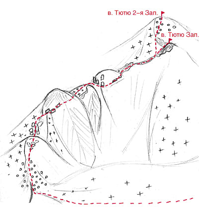Описание маршрута
От плеча Шогенцукова спустится на ледник (закрытые трещины) и подойти под седловину перевала Куллумкол, расположенную под южным склоном Западного гребня вершины Тютю Западная. По левой стороне ледово-снежного склона подняться на седловину перевала Куллумкол. Здесь свернуть вправо. Пройдя седловину, по простой заснеженной (возможно обледенелой) осыпи, потом по ледово-снежному склону (лавины) выйти на Западный гребень вершины Тютю Западная. Тут свернуть вправо и по пологому широкому заснеженному легкому скальному 150-200- метровому Западному гребню подойти под 1 жандарм. Жандарм обходить по заснеженным разрушенным скалам справа. Далее по пологому ледово - снежному (карниз) Западному гребню подойти под 2 жандарм, который обойти справа по осыпям. Далее движетесь по гребню и прямо по ходу движения вы увидите небольшой каменистый взлет, напоминающий очередной жандарм - это и есть в. Тютю-баши 1-ая Зап. А свернув с гребня влево на снежник и траверсировав под склоном Тютю Западной, выходите на крутой склон с мелкой осыпью. По сыпухе, переходящей в простые скалки, выходите на вершину Тютю-баши 2-я Западная.
Азау: ТраверсЭльбруса по юго-западной стене 5Б
ТраверсЭльбруса по юго-западной стене 5Б
Вершина КЮКЮРТЛЮ (4623 м) находится в западном плече Эльбруса, примерно в 4-х километрах от Западной вершины. Юго-западная стена вершины обрывается на ледник УЛЛУ-КАМ, высота стены около 700 м, средняя крутизна около 75гр. Стена имеет вид замка с зубчатыми башнями. Скалы вулканического происхождения. От самой крайней башни на запад отходит отрог с вершиной высотой 3960 м, справа от стены идет снежно-ледовый кулуар, восточнее которого начинается стена вершины 4912 м, упирающаяся в перемычку ХОТЮ-ТАУ.
Стена КЮКЮРТЛЮ-КОЛ-БАШИ впервые была пройдена в 1957 году двойкой армейских альпинистов – Некрасовым В.П. и Живлюком Г.Г. Последующий траверс КЮКЮРТЛЮ-КОЛ-БАШИ – вершины 4912 м – Зап.Эльбруса – Вост.Эльбруса со спуском на «Приют 11» был совершен совместно со вспомогательной группой из 5-ти человек. Маршрут был пройден с 15 по 21 августа.
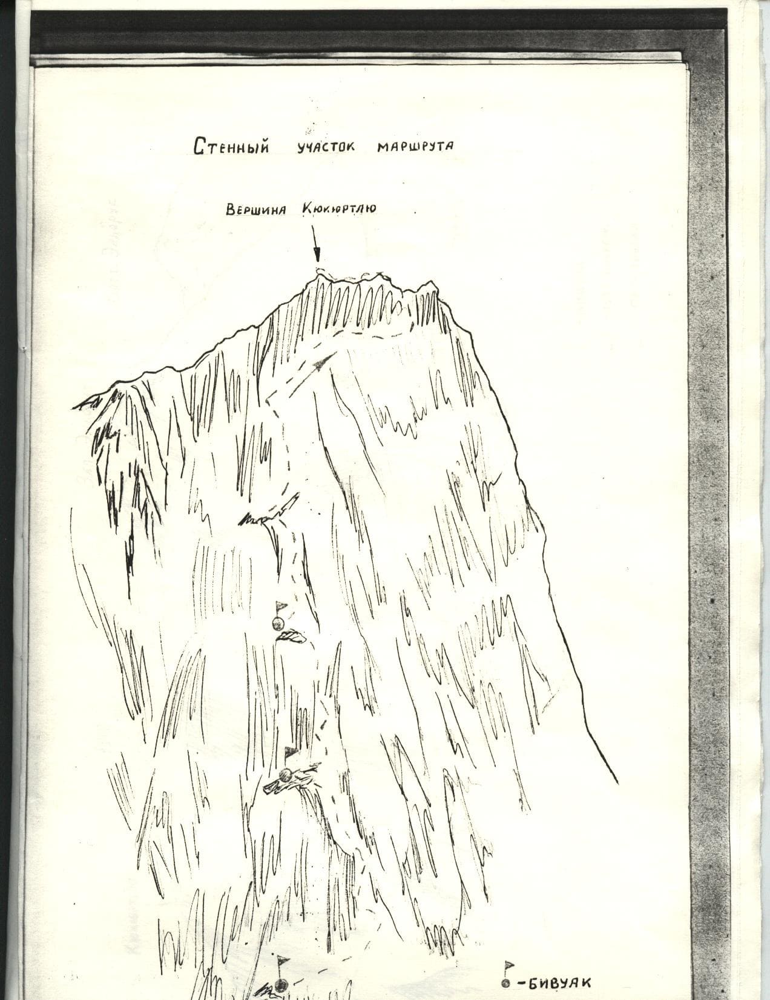Описание маршрута
1-ый день Из Терскола путь идет вверх по ущелью АЗАУ к старому кругозору, от него по морене и через ледник АЗАУ на плато АЗАУ и далее на перевал ХОТЮ-ТАУ. По перемычке Хотю-Тау надо выйти на гребень, выводящий в ущелье УЛЛУ-КАМ, по нему спуститься до боковой морены ледника УЛЛУ-КАМ. Этот путь занимает около 9-ти часов.
2-ой день Через ледник УЛЛУ-КАМ надо подойти к осыпному ребру западного отрога стены КЮКЮРТЛЮ. Справа и слева от ребра расположен большой кулуар, по которому часто идут камнепады. Ребро имеет два скальных взлета. Скалы легкие. За вторым взлетом расположен большой жандарм, его можно обойти слева по осыпной полке. Перед стеной выступает ряд жандармов, и камнепадоопасными кулуарами, дно которых покрыто льдом. Надо траверсировать кулуары под защитой жандармов. Нижнюю часть стены загораживает крутой скальный контрфорс, на котором организуется ночевка. Рабочий день – 6 часов.
3-ий день Начало подъема идет прямо вверх по крутым скалам (40м) с попеременной страховкой, затем пересечь узкий кулуарчик и выйти на скалы контрфорса. Подъем на гребень контрфорса проходит по крутому внутреннему углу, переходящему в камин, с крючьевой страховкой. Далее движение идет вверх по ребру контрфорса. Крутизна скал – 40-50гр. Через 40м контрфорс переходит в стенку, путь которой идет влево-вверх по узкой крутой полочке, сходящей через 20 м на нет. Здесь надо перейти на другую полку, идущую вправо-вверх, скалы хрупкие, легко отслаиваются. Скалы вулканические, крючья должны быть длиной 12-15 см. Дальше движение проходит по узкому камину (30м) с крючьевой страховкой (крутизна около 80гр). Камин выводит на широкую полку. Движение следует продолжать вверх-вправо (20м), затем траверс (5м) влево. Далее пройдя 20м вправо-вверх выходим на осыпную полку, по которой двигаемся вверх-влево. Здесь есть площадка, на которой можно организовать бивуак. В толщине может быть снег и лед. На площадке есть контрольный тур. С площадки вверх – крутой внутренний угол (15м), заканчивающийся каминчиком.
4-ый день По предварительно обработанному маршруту выход на вертикальную стену, имеющую местами отрицательный наклон. Движение на стременах. Далее выход на левый камин (40м), выводящий на наклонную скальную площадку. Здесь возможна ночевка. Отсюда вдоль скальной стенки продвигаемся влево, затем вверх по наклонной стене (10м) в камин.
5-ый день Камин переходит в гладкую вертикальную стенку, подъем по которой выводит в камин, заканчивающейся маленькой площадкой на камине. Отсюда движение вправо-вверх по гладкому кулуару. Скалы отслаиваются, крючья держат плохо. Через 20м поднимаемся на площадку и траверсом выходим на башню. Скалы сильно разрушены, воды нет. В скалах вырубается площадка для ночевки, здесь же есть контрольный тур.
6-ой день Подъем по скалам, покрытым разрушенными породами, со страховкой через длинные скальные крючья. Пройдя 200м нужно повернуть вправо, перейти кулуар, кое-где покрытый льдом, и выйти на гребешок, который выводит к крутой скальной стенке. Подъем по ней идет вправо-вверхс крючьевой страховкой и выводит к вершине КЮКЮРТЛЮ. Спуск с этой вершины и подъем на вершину 4912м продолжается около двух часов по снежно-ледовому склону крутизной около 25-30гр. Спуск с вершины 4912м идет в направлении Западного Эльбруса, в седловине между ними устраивается бивуак. Рабочий день – 11 часов.
7-ой день Продолжаем подъем прямо вверх на седловину между Западной и Юго-Западной вершинами Эльбруса. На первом скальном острове есть контрольный тур. Поднимаемся на обе вершины, затем спускаемся на седловину между Западным и Восточным Эльбрусом. Подъем на Восточную вершину по обычному пути с седловины и спуск с нее на восток, в сторону ущелья ИРИК-ЧАТ. С высоты около 5000м траверсом выходим к «ПРИЮТУ ОДИННАДЦАТИ».
В состав траверса входят: КЮКЮРТЛЮ-КОЛ-БАШИ (4623м), вершина 4912м, Ю-З (5600м), ЗАП.(5633м) вершины Эльбруса.
На маршруте было забито 93 крюка, необходимо иметь крючья длиной до 15 см.
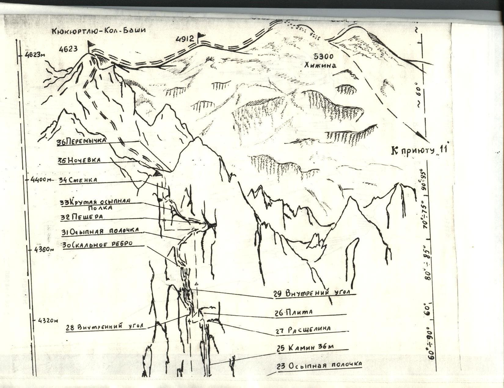 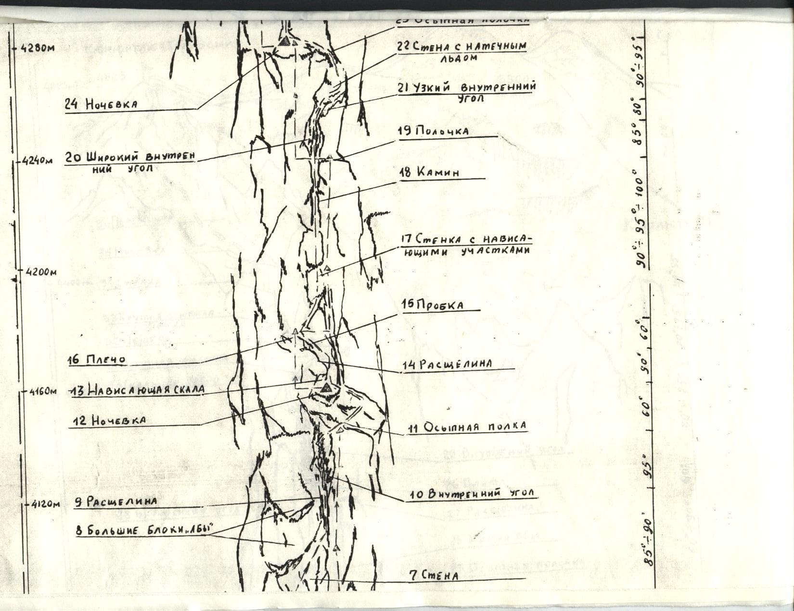 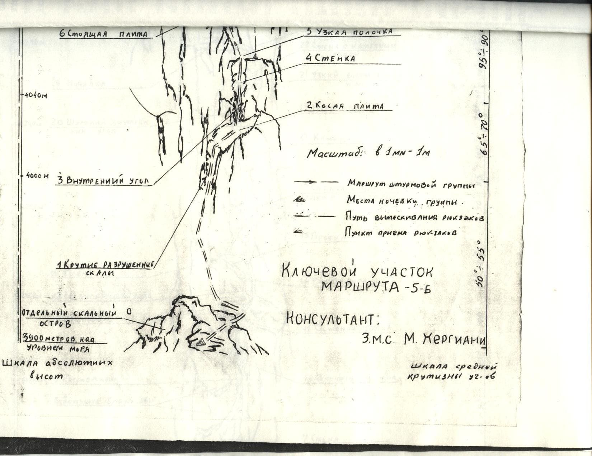Взято на ullutau.ru
Азау: Эльбрус с севера